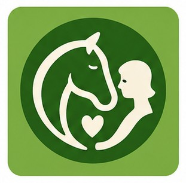

FERMTERRAP
Votre ferme thérapeutique
Site en construction et actuellement optimisé pour mobile sur Chrome Android.
Présentation
Quels sont nos objectifs ?
Agissez dès maintenant !
Vous avez une ferme à vocation thérapeutique...
Référencez votre ferme pour qu'elle puisse figurer dans la base de données et apparaître, dès que possible, sur la carte et dans les résultats de recherche.
Inscrire ma ferme maintenant !Vous êtes étudiant ou (ergo)thérapeute...
Inscrivez votre adresse e-mail pour recevoir les dernières actualités concernant les fonctionnalités du site et les formations susceptibles de vous intéresser.
Inscrire mon e-mail.Vous avez un établissement de santé...
Renseignez une adresse mail professionnelle afin de faire le premier pas vers une nouvelle activité pour votre établissement de santé et développer vos possibilités de collaboration.
Vos coordonnées ici.